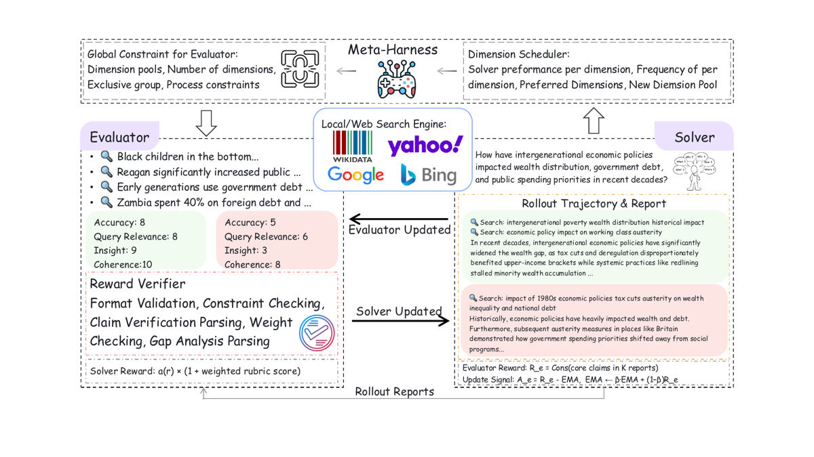
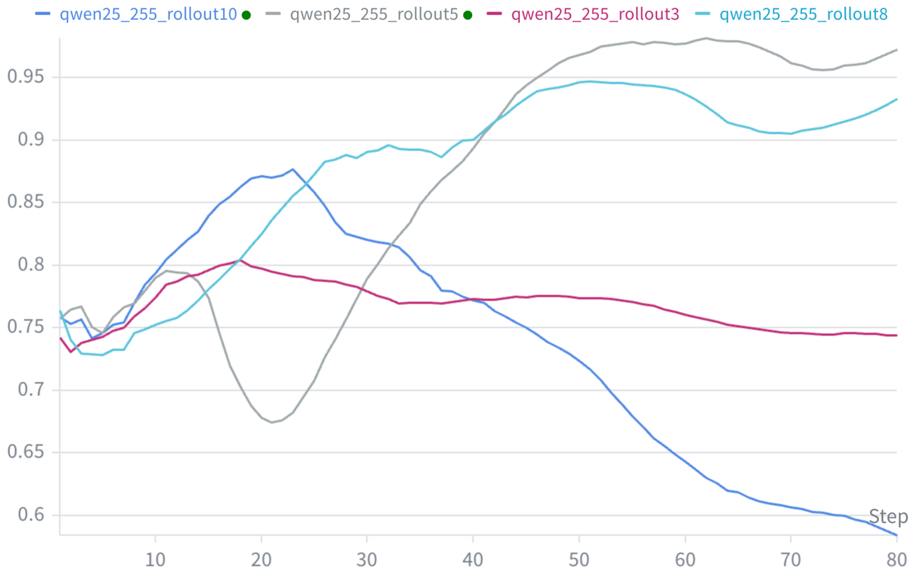
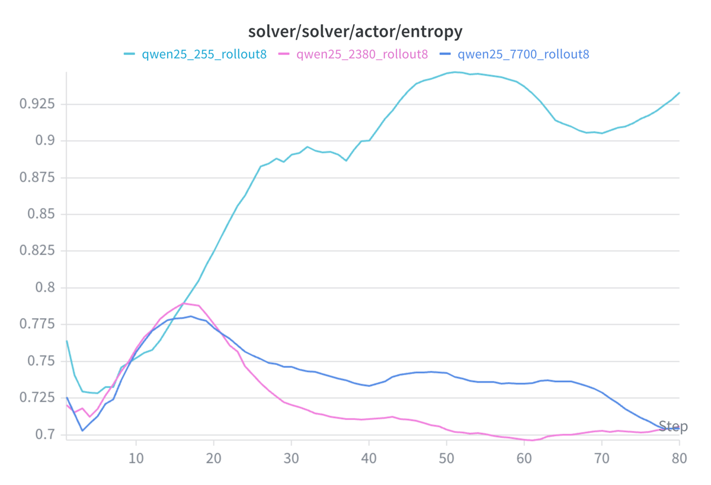

Note sur la priorité. A pour le design et les résultats négatifs, pas pour les chiffres. C'est le seul papier de la pile qui attaque frontalement la configuration du juridique — pas de vérifieur exact, réponse longue et argumentée, rubrique dépendante de la requête — et qui documente, chiffres de training à l'appui, comment un évaluateur co-entraîné dérive. L'evidence est à 1/6 : tout ce qui est repris ici doit l'être comme hypothèse de design, jamais comme résultat établi.
TL;DR — SCORE fait jouer à un même modèle (paramètres partagés) deux rôles, solver (écrit le rapport) et evaluator (choisit la rubrique et note), met à jour le solver par GRPO sur la note de l'évaluateur et l'évaluateur par REINFORCE sur la consistance inter-rollouts des rapports, le tout borné par un meta-harness externe non entraînable (GPT-5.2) qui redéfinit tous les 5 steps l'espace de rubriques admissibles [§3.2, §4, Tab. 5].
Claim principal — sur DeepResearchBench et DeepResearchEval, avec Qwen2.5-7B-Instruct et Llama-3.1-8B-Instruct déployés dans deux harness d'agent (open-deep-research / ReAct, gpt-researcher / plan-and-execute), SCORE améliore la qualité des rapports là où GRPO et DPO standards dégradent ou font collapser le modèle ; le gain affiché le plus fort est +30,04 points de valid citation ratio (Qwen2.5-7B + gpt-researcher, 36,11 → 66,15) [Tab. 1].
⚠️ Le claim implicite du titre et de l'abstract — « un évaluateur qui co-évolue maintient une pression d'optimisation que l'évaluateur statique perd » — n'est jamais testé directement : il n'y a aucune baseline « RL avec juge LLM statique » dans les tableaux (voir §7.0).
DimensionScheduler enregistre quelles dimensions produisent des rollouts plus reproductibles et le
meta-harness régénère toutes les M=5 steps les contraintes (dimension_pool, k, must_include,
weight_min/max, contraintes de process) [Alg. 1 phases 1 et 7, Tab. 5, prompt meta_harness.txt].
⚠️ C'est un curriculum sur le vérifieur, pas sur les tâches — inversion notable par rapport aux envs RLVR classiques.Deux rôles, deux observations distinctes sur le même acteur θ :
q, la rubrique échantillonnée par l'évaluateur (H_q, w_q), et les résultats de
recherche renvoyés entre <observation>...</observation> [prompt solver.txt, §3.4].must_include, k, bornes de poids, contraintes de process) injectées dans le
prompt de génération de rubrique x_t^rubric [Alg. 1 phase 2, prompt evaluator.txt].Un seul outil, des deux côtés : recherche textuelle, appelée par un tag inline, pas par un function-call structuré.
<search>your query here</search> → <observation>...</observation>
<think>...</think> (raisonnement, solver)
<answer>...</answer> (rapport final, solver)
[prompt solver.txt règles 2, 7, 8]
L'évaluateur utilise le même tag <search> pour vérifier les claims et les citations, puis émet sa sortie
en XML structuré [prompt evaluator.txt] :
<dimensions>
<dim name="[Base Dimension]"/>
<dim name="[Selected Dimension]" weight="[Weight]"/>
</dimensions>
<report_evaluations>
<report id="[Report ID]">
<verification>your verification process here</verification>
<gap_analysis>your gap analysis here</gap_analysis>
<scores>
<score dim="[Base Dimension]" value="[Score]" reason="..."/>
<score dim="[Selected Dimension]" value="[Score]" reason="..."/>
</scores>
</report>
</report_evaluations>
L'évaluateur suit un protocole en 4 étapes imposées [prompt evaluator.txt] :
1. inclure obligatoirement {must_include} comme dimension principale, puis choisir exactement {k-1}
dimensions supplémentaires dans le pool, chaque poids dans [{Weight Min}, {Weight Max}] ;
2. vérifier les claims et citations de chaque rapport via l'outil de recherche ;
3. faire une recherche indépendante depuis la requête d'origine pour identifier les gaps non couverts ;
4. noter chaque rapport sur chaque dimension à partir des preuves trouvées.
⚠️ Point de design important : l'évaluateur est forcé d'aller chercher des preuves externes avant de noter. Ce n'est pas un juge LLM qui note sur ses priors — c'est un juge retrieval-grounded. C'est l'ingrédient le plus directement transposable au juridique (voir §9).
C'est ici que se joue l'essentiel du contrôle de l'évaluateur. Un Reward Verifier déterministe filtre les rewards avant qu'ils n'atteignent l'optimisation du solver [Fig. 1 « pipeline », légende Fig. 1]. Ses composants, tels que listés dans la figure : Format Validation, Constraint Checking, Claim Verification Parsing, Weight Checking, Gap Analysis Parsing.
S'y ajoute un gate de profondeur de vérification explicite dans l'algorithme [Alg. 1 phase 4] :
if evaluator verification/search depth for (i,k) is below τ_s then set s_i^k ← 0 (discard under-verified rewards to avoid noisy solver supervision)
⚠️ La valeur de τ_s n'est jamais donnée — ni dans le texte, ni dans Tab. 5. Le meta-harness peut par
ailleurs imposer un min_number_of_tool_call [prompt meta_harness.txt], mais sa valeur non plus n'est rapportée.
Le mécanisme anti-dérive central du papier est donc décrit mais non paramétré et jamais ablaté seul.
Le papier ne donne pas de trajectoire complète. L'illustration la plus proche est le case study [Fig. case1, App. Experiments],
recopié ici car il porte sur une requête juridique :
General Evaluation Rubric: [factuality, insight, coherence, complexity]
User Query 1: What does Texas Penal Code Chapter 9.42 specifically permit, and under what conditions can deadly force be used to protect property?
Report: Texas law permits deadly force to protect property when the force is deemed reasonable, especially in cases involving theft or unlawful intrusion. The rule is often understood as allowing force when property cannot otherwise be protected. […]
Static evaluation: [factuality: 7, insight: 2, coherence: 8, complexity: 7] Adaptive evaluation: [factuality: 3, citation_effectiveness: 2, coherence: 8, completeness: 3]
Reason: The report is well-written, but it does not ground its claims in the statutory text and provide valid citation. Specifically, it omits the exact conditions enumerated in § 9.42, such as the nighttime requirement and the "no other means" clause, leading to an overly permissive interpretation.
⚠️ C'est un cas choisi par les auteurs, sans statistique d'accompagnement : aucune mesure du taux auquel la rubrique adaptative corrige la rubrique statique sur un échantillon. À lire comme une illustration de design, pas comme une preuve.
(a) Reward solver — LLM-as-a-judge rubriqué et grounded, avec une forme multiplicative [§3.5] :
$$R_s(r) = a(r)\cdot\Big(1+\sum_{j=1}^{m} w_j\,s_j(r;q,D_q^{e})\Big)$$
a(r) : « report-level validity or accuracy score » [§3.5] — c'est la sortie du Reward Verifier déterministe
(format, contraintes, parsing) [Fig. 1]. Son calcul exact et son échelle sont non précisés.s_j : note de l'évaluateur sur la dimension h_j, sous le contexte de preuves D_q^e que l'évaluateur a
lui-même collecté.w_j : poids choisis par l'évaluateur, bornés par [weight_min, weight_max] du meta-harness.⚠️ Forme multiplicative : a(r)=0 annule tout. C'est un gate dur — un rapport mal formé ou
non conforme aux contraintes ne rapporte rien, quelle que soit la note de rubrique. Bon design ; mais
ce qui entre dans a(r) n'étant pas spécifié, le mécanisme n'est pas reproductible.
(b) Reward evaluator — consistance inter-rollouts, pas correction [§3.5, Alg. 2] :
$$R_e(\Gamma_q)=C(\Gamma_q)=\frac{1}{\binom{K}{2}}\sum_{i<j} c_{ij}(\Gamma_q),\qquad A_e = R_e - b_{t-1},\qquad b_t=\beta b_{t-1}+(1-\beta)R_e$$
avec β = 0,7 [Tab. 5]. L'implémentation de PairwiseConsistency est donnée explicitement :
« mean pairwise TF-IDF cosine similarity over extracted rollout conclusions » [App. Algorithm, préambule].
⚠️⚠️ C'est le point le plus fragile du papier. La « consistance » entre deux conclusions de rapports est mesurée par un cosinus TF-IDF, c'est-à-dire un recouvrement lexical. Deux conclusions juridiquement opposées partageant le vocabulaire du domaine scorent haut ; deux conclusions identiques reformulées scorent bas. Les courbes le confirment indirectement : R_eval vit entre 0,05 et 0,15 [Fig. 4b, Fig. 5b], soit un recouvrement lexical quasi nul — le signal qui pilote l'évaluateur est extrêmement bruité et faible en valeur absolue. Les auteurs eux-mêmes prennent leurs distances : « consistency is used as a stability-oriented auxiliary signal for rubric adaptation rather than as a direct correctness criterion » [§3.5].
R_eval est la moyenne des C_i sur les B=64 requêtes [Alg. 2 phase 1],
associé à un seul rollout de rubrique (evaluator rollout number 1 [Tab. 5]).
⚠️ REINFORCE avec un seul échantillon d'action et un baseline EMA : la variance du gradient de l'évaluateur
est nécessairement très élevée. C'est le seul mécanisme de réduction de variance présent.Pas de pénalité de longueur, pas de bonus de format séparé — le format est absorbé dans a(r) (multiplicatif).
La KL est appliquée dans la loss de l'acteur, pas comme terme de reward : coefficient 0,05, « low-variance KL »,
référence = politique fixe π_ref [§3.6, Tab. 5]. Les auteurs insistent : « KL regularization is not treated as a
third reward channel, but as an optimization regularizer » [§3.6].
Quatre garde-fous, par ordre de force :
| # | Mécanisme | Où | Ablaté / mesuré ? |
|---|---|---|---|
| 1 | Meta-harness externe non entraînable (GPT-5.2, refresh tous les 5 steps) : fixe k, must_include, bornes de poids, dimension_pool, contraintes de process. Interdit explicitement à l'harness de choisir lui-même les dimensions finales. |
§3.3, prompt meta_harness.txt, Tab. 5 |
Ablaté globalement (« − Meta-Harness », Fig. 3) ; aucun chiffre tabulé |
| 2 | Gate de profondeur de vérification τ_s : reward mis à 0 si l'évaluateur n'a pas assez cherché | Alg. 1 phase 4 | Jamais ablaté, τ_s jamais donné |
| 3 | Reward Verifier déterministe (format, contraintes, parsing des poids / de la vérification / du gap analysis) | Fig. 1 | Jamais ablaté |
| 4 | KL vs π_ref (λ=0,05) sur l'acteur partagé | §3.6, Tab. 5 | Jamais ablaté |
⚠️ Verdict sur la question posée : le papier décrit un dispositif anti-dérive sérieux et plausible, mais ne mesure aucun de ses composants individuellement. Ce qui est réellement mesuré est l'inverse : que sans le solver entraîné, l'évaluateur hacke effectivement son reward de consistance (§5). L'autre chose réellement mesurée est que le dispositif complet ne suffit pas — le collapse arrive quand même dès qu'on augmente les données (2 380, 7 700) ou le nombre de rollouts (K=10) [Fig. 4a, Fig. 5a]. La stabilité revendiquée repose donc en dernier ressort sur un early stopping que les auteurs reconnaissent : « careful hyperparameter tuning and strict early stopping mechanisms are necessary » [App. Limitations], avec un budget de 50 à 120 steps seulement [Tab. 5].
drb_vc_prompt.txt,
App. Prompts] — il demande de classer chaque statement en supported / unsupported / unknown contre une
référence, avec la règle « si la référence est vide ou 'page not found', tout est unknown ». Mais la
précision de ce classifieur n'est pas validée.Le vérifieur n'a pas été attaqué ni red-teamé délibérément. Le reward hacking rapporté est observé dans une ablation, pas provoqué (§5).
Â_i^k = (s_i^k − μ_i)/(σ_i + ε)
avec μ_i, σ_i sur les K rollouts de la requête i [Alg. 1 phase 5]. Mise à jour à chaque step.θ ← θ + η α Â_eval ∇_θ log π_e(H_t, w_t | x_t^rubric; θ), baseline EMA. Période U.| Paramètre | Valeur |
|---|---|
| Learning rate | 1e-6 |
| Warmup | 5 steps, ratio 0,05 |
| KL | coef. 0,05, low-variance KL, dans la loss acteur uniquement, référence π_ref fixe |
| Taille de groupe (solver rollouts K) | 8 |
| Rollouts evaluator | 1 |
| Batch | train 64 ; PPO mini-batch 32 ; micro-batch 4 / GPU |
| Longueur max génération | 4 096 (solver) ; 2 048 (evaluator) |
| Longueur max input | 8 192 |
| Tours assistant max | 10 |
| EMA baseline decay β | 0,7 |
| Température evaluator | 0,8 |
| Température solver | non précisé |
| Meta-harness refresh M | tous les 5 steps |
| Nombre de steps | 50–120 |
| Données | 255 (Qwen2.5-7B) / 2 380 (Llama-3.1-8B) |
| τ_s (seuil de profondeur de vérification) | non précisé |
| α (échelle evaluator, η_e/η_s) | non précisé numériquement (défini seulement dans l'analyse, §4) |
| Clipping GRPO (ε) | non précisé |
| On/off-policy, nb d'epochs par batch | non précisé |
| Seeds | non précisé — aucune indication de répétition |
La readability chute pour presque toutes les méthodes, SCORE compris : −2,63 / −2,88 / −1,07 / −0,68 selon la configuration [Tab. 1]. Les auteurs l'interprètent comme un arbitrage inévitable entre rigueur analytique et simplicité conversationnelle [§Main Results] et notent que la « Clarity » de DeepResearchEval, elle, monte (+0,1 à +1,3) [Tab. 2, §Results of DeepResearchEval]. Les limitations confirment : « aggressively optimizing for one dimension can sometimes lead to performance degradation in another » [App. Limitations]. ⚠️ L'interprétation « c'est un trade-off fondamental » est une hypothèse (les auteurs écrivent « We hypothesis »), pas un résultat. Une lecture alternative non testée : la pondération multi-dimensionnelle de l'évaluateur dé-priorise activement la dimension qu'il ne sélectionne pas.
| Chiffre / claim annoncé | Où il est annoncé | Source dans le papier | Verdict |
|---|---|---|---|
| « LLMs' generation quality is positively correlated with its evaluation proficiency » | Intro, abstract implicite | Fig. 2 (gen_eval) : 6 modèles, de (31,9 ; 2,21 %) pour Qwen2.5-7B à (51,76 ; 37,67 %) pour DeepSeek-V3.2 |
sur-généralisé — n=6 modèles, aucun coefficient de corrélation ni p-value rapporté ; gemini-2.5-pro (35,58 ; 16,64 %) est sous Qwen2.5-72B (37,43 ; 17,66 %) et GLM-4.7-Flash (40,6 ; 20,6 %). Le protocole de mesure de l'« Evaluation Agreement » n'est décrit nulle part. |
| « static evaluators […] leading to insufficient and eventually saturated optimization pressure » | Abstract | — | introuvable — aucune expérience ne fait tourner un évaluateur statique sur la durée pour montrer la saturation. Aucune baseline « RL + juge LLM statique » n'existe dans Tab. 1 ou Tab. 2. La seule saturation montrée est celle de SCORE lui-même [Fig. 5b]. |
| « consistent improvement in report generation quality » | Abstract | Tab. 1 : Readability baisse dans les 4 configurations SCORE (−2,63 / −2,88 / −1,07 / −0,68). Tab. 1, Qwen + gpt-researcher : SCORE Insight 33,12 < DPO 33,64 ; Comp. 36,15 < DPO 36,22 | contredit — l'amélioration n'est ni consistante par dimension (readability baisse partout) ni consistante vs la meilleure baseline (DPO bat SCORE sur 2 dimensions en Qwen/plan-and-execute). |
| « substantial […] improvement » | Intro, §Main Results | Overall vs base : +3,07 / +2,51 / +4,97 / +3,91 [Tab. 1]. Overall vs DPO : +3,94 / +0,52 / +0,31 / +0,06 | sur-généralisé — substantiel contre le modèle de base ; dans le bruit contre DPO dans le paradigme plan-and-execute (+0,31 et +0,06, sans intervalle de confiance). |
| VC : gain le plus visible du papier | Tab. 1 | Qwen + gpt-researcher 36,11 → 66,15 (+30,04) ; Llama + gpt-researcher 38,23 → 52,38 (+14,15) ; Qwen + ReAct 11,76 → 19,35 (+7,59) ; Llama + ReAct 22,58 → 30,55 (+7,97) | confirmé arithmétiquement. ⚠️ Mais mesuré en web search alors que l'entraînement est en WikiData local [Tab. 5] et jugé par un classifieur supported/unsupported non validé [drb_vc_prompt.txt]. |
| « GRPO and DPO suffer […] occasionally collapsing to exactly zero » | §Main Results | Tab. 1 : Llama + GRPO + gpt-researcher, VC = 0,00 | confirmé (un cas sur huit lignes de baseline). |
| Deltas de la ligne Llama-3.1-8B + GRPO (gpt-researcher) | Tab. 1 | Comp. 16,79 annoncé (−38,23) alors que 25,62 − 16,79 = 8,83 ; VC 0,00 annoncé (−8,16) alors que 38,23 − 0,00 = 38,23 | contredit — les deux deltas sont erronés et la valeur 38,23 est manifestement transposée d'une cellule à l'autre. Les autres lignes vérifiées sont arithmétiquement correctes : erreur isolée mais réelle. |
| « our framework consistently achieves the highest scores across all dimensions » (DeepResearchEval) | §Results of DeepResearchEval | Tab. 2, Llama + ReAct : SCORE = DPO sur Cove (4,3), IF (4,7), Clar (5,2), Meta (3,5) ; ne dépasse que sur Insight (4,4 vs 4,3) | contredit — égalité, pas supériorité, sur 4 dimensions sur 5 dans cette configuration. |
| « requiring only a remarkably small amount of training data » | Conclusion | Tab. 5 : 255 (Qwen) et 2 380 (Llama) | sur-généralisé — vrai pour Qwen uniquement ; le run Llama utilise 9× plus, et 2 380 est la taille que §Training Data Size associe au collapse. |
| « Extensive experiments » | Abstract | 2 modèles de base × 2 harness d'agent × 2 benchmarks, 1 run chacun, 0 seed répété | sur-généralisé. |
Verdict 7.0 → case coherence = faux.
DeepResearchBench, Overall [Tab. 1] :
| Harness | Modèle | Base | GRPO | DPO | SCORE | SCORE − DPO |
|---|---|---|---|---|---|---|
| open-deep-research (ReAct) | Llama-3.1-8B | 27,00 | 23,41 | 26,13 | 30,07 | +3,94 |
| open-deep-research (ReAct) | Qwen2.5-7B | 31,92 | 32,67 | 33,91 | 34,43 | +0,52 |
| gpt-researcher (plan-and-exec.) | Llama-3.1-8B | 28,92 | 16,97 | 33,58 | 33,89 | +0,31 |
| gpt-researcher (plan-and-exec.) | Qwen2.5-7B | 32,00 | 30,03 | 35,85 | 35,91 | +0,06 |
DeepResearchEval [Tab. 2], dimensions Cove / Insight / IF / Clar / Meta :
| Harness | Modèle | Base | DPO | SCORE |
|---|---|---|---|---|
| ReAct | Llama-3.1-8B | 3,7/3,2/4,5/5,1/2,6 | 4,3/4,3/4,7/5,2/3,5 | 4,3/4,4/4,7/5,2/3,5 |
| ReAct | Qwen2.5-7B | 4,4/3,9/5,2/5,4/3,2 | 4,6/4,1/5,6/5,8/3,4 | 6,3/5,9/7,0/6,6/5,0 |
| plan-and-exec. | Llama-3.1-8B | 3,9/3,5/4,8/5,6/2,8 | 2,4/2,8/2,6/3,5/2,0 | 5,9/5,6/6,9/6,9/4,6 |
| plan-and-exec. | Qwen2.5-7B | 4,5/4,1/5,7/5,9/3,4 | 6,1/5,8/6,8/6,5/4,8 | 6,5/6,0/7,5/7,0/5,1 |
⚠️ L'écart entre les deux benchmarks est frappant : sur DeepResearchBench SCORE est au coude-à-coude avec DPO, sur DeepResearchEval il le distance nettement (sauf Llama/ReAct où il l'égale). DeepResearchEval est le benchmark dont les auteurs disent qu'il « s'aligne étroitement avec notre perspective méthodologique » [§Benchmarks] — il partage le principe de rubrique dynamique par requête, dont la dimension « Meta ». Le gain le plus impressionnant est donc mesuré sur le banc le plus favorable par construction.
a(r), α, le clipping et le reward de la baseline GRPO manquent.À répliquer — et probablement pas tel quel. Le design est intéressant et les résultats négatifs (hacking de la consistance, collapse avec plus de données, collapse avec K grand) sont crédibles, bien instrumentés par les courbes et convergents entre eux. Les résultats positifs ne sont pas soutenus : pas de baseline appariée sur la question posée, pas de seeds, marges de +0,06 à +0,52 sur le benchmark neutre, gains importants uniquement sur le benchmark aligné sur la méthode, et le juge final est le modèle qui a façonné l'entraînement. Ce mémo retient donc le papier pour sa carte des mécanismes et de leurs modes de défaillance, pas pour ses scores.

Ce qu'il faut voir : la boucle complète, et surtout la boîte « Reward Verifier » côté évaluateur — Format Validation, Constraint Checking, Claim Verification Parsing, Weight Checking, Gap Analysis Parsing — qui est le filtre déterministe placé entre le juge appris et le gradient du solver. En haut, le meta-harness (non entraînable) reçoit duDimensionScheduler la performance du solver par dimension et réécrit le pool de
dimensions et les contraintes de process ; il ne choisit jamais directement les dimensions finales
[prompt meta_harness.txt]. En bas à gauche, la forme du reward solver a(r) × (1 + weighted rubric score) :
a(r) est multiplicatif, donc un échec de vérification annule tout. En bas à droite, le reward évaluateur
R_e = Cons(core claims in K reports) avec le centrage EMA. C'est le schéma à copier pour un env juridique :
juge appris + harness externe fixe + vérifieur déterministe en série.

Ce qu'il faut voir : K=10 (bleu) décroche à partir du step ~23 et descend jusqu'à ~0,58 au step 80 — c'est le collapse. K=3 (rouge) reste plat à ~0,745 : pas d'apprentissage. K=8 (cyan, le réglage retenu) et K=5 (gris) montent vers 0,93–0,97. Deux choses que le texte ne dit pas : (i) la chute de K=10 est progressive sur 55 steps, pas le « sudden drop » annoncé [§Experiments on Rollout Number] ; (ii) K=5 finit au-dessus de K=8 et n'est jamais discuté, alors que c'est K=8 qui a été retenu. À rapprocher derollout_eval_reward.png, où le reward
de l'évaluateur pour K=10 monte jusqu'au plafond (0,15) et s'y aplatit vers le step ~73 : évaluateur
récompensé de plus en plus pendant que la diversité du solver s'effondre — signature du hack structurel de la
consistance, jamais nommée comme telle par les auteurs.

Ce qu'il faut voir : seul le run à 255 exemples (cyan) maintient une entropie croissante ; 2 380 (rose) et 7 700 (bleu) décrochent dès le step ~17 et convergent vers ~0,70. Le résultat de scaling est donc inversé : plus de données ⇒ collapse plus rapide, parce que le solver trouve les angles morts de l'évaluateur [§Training Data Size]. Point à retenir avant toute transposition : 2 380 est exactement la taille du run principal de Llama-3.1-8B [Tab. 5] — les gains Llama de Tab. 1 sont obtenus dans le régime que cette figure désigne comme dégénératif, et le papier ne relève jamais cette contradiction.| Ingrédient | Choix du papier | Équivalent juridique | Transfert | Ce qui manque |
|---|---|---|---|---|
| Source des tâches | Requêtes utilisateurs Reddit, 255–2 380, sans pipeline décrit [§Training Details, Tab. 5] | Questions de recherche juridique réelles (mémos internes, tickets Harvey, questions de praticiens) ; ou minées depuis décisions/doctrine | non en l'état | Tout le pipeline. Le papier ne documente ni génération, ni filtrage, ni difficulté. Rien à copier. |
| Vérifieur — juge grounded | Évaluateur forcé de chercher des preuves avant de noter : <search> obligatoire, <verification> et <gap_analysis> parsés [prompt evaluator.txt, Fig. 1] |
Juge obligé de retrouver l'article de code / l'arrêt cité et de vérifier que le rapport en reproduit les conditions ; le case study Texas Penal Code § 9.42 est littéralement ce cas [App. Fig. case1] |
direct | Aucune validation contre des humains. Aucun taux de FP/FN. Dans un corpus juridique, la vérification est plus faisable que sur le web ouvert (source autoritative, stable, citable) — c'est un cas où le juridique est plus facile que le deep research générique. |
| Vérifieur — rubrique adaptative | Dimensions choisies par requête dans un pool, poids bornés par le harness [§3.4] | Rubrique par type de question : statutaire (citation exacte, conditions cumulatives), jurisprudentielle (pertinence de l'espèce, distinction), transactionnelle (exhaustivité des risques) | adaptable | Le pool de dimensions doit être fermé et écrit par des juristes, pas exploré par le modèle. Un modèle qui invente ses propres dimensions juridiques est un risque, pas une fonctionnalité. |
| Vérifieur — reward de consistance | Cosinus TF-IDF moyen entre conclusions de K rapports [App. Algorithm] | Accord entre K réponses sur la conclusion juridique (l'action est-elle licite ? le délai court-il ?) | non tel quel | Le TF-IDF est un proxy lexical inutilisable en droit : deux conclusions opposées partagent le vocabulaire. Et le papier montre lui-même que ce signal se fait hacker [§Module Ablation Study]. Si on garde l'idée, il faut extraire un holding structuré et mesurer l'accord dessus — et ne jamais en faire le reward d'un évaluateur entraîné. |
| Harness / outils | Un seul outil <search> en tags inline, 10 tours max, retrieval statique en train et web en éval [prompt solver.txt, Tab. 5] |
Recherche dans une base juridique versionnée (codes, jurisprudence, doctrine) avec identifiants stables ; outil de résolution de citation ; outil de vérification de vigueur/abrogation | adaptable | Le mismatch train (WikiData) / éval (web) du papier est à ne surtout pas reproduire : en droit, l'index d'entraînement doit être le même corpus versionné que l'index d'éval, sinon les gains de citation ne veulent rien dire. |
| Meta-harness externe non entraînable | GPT-5.2, refresh tous les 5 steps, fixe k, must_include, bornes de poids, pool, contraintes de process ; interdit de choisir les dimensions finales [prompt meta_harness.txt] |
Un contrôleur qui impose « citation_validity toujours incluse », borne les poids, exige la vérification des sources et un nombre minimal de lookups — piloté par des règles métier, pas par un LLM | direct dans sa forme, à durcir sur le fond | Le remplacement le plus évident : un harness déterministe et versionné au lieu d'un LLM propriétaire. Le papier ne mesure jamais la contribution propre du harness (radar non chiffré), donc rien ne dit que GPT-5.2 y apporte quoi que ce soit qu'une règle n'apporterait. |
| Gate de profondeur de vérification τ_s | Reward mis à 0 si l'évaluateur n'a pas assez vérifié [Alg. 1 phase 4] | Reward nul si le juge n'a pas ouvert les sources citées / n'a pas résolu chaque citation du rapport | direct | τ_s n'est pas donné, jamais ablaté. Mais l'idée — un juge qui n'a pas fait son travail ne produit pas de gradient — est la plus transposable du papier. |
| Forme du reward solver | a(r) × (1 + Σ w_j s_j) : validité multiplicative × rubrique pondérée [§3.5] |
validité_citations(r) × (1 + Σ w_j s_j) : une citation inventée ou non vérifiable met le reward à zéro |
direct | a(r) n'est pas spécifié dans le papier. En droit il peut l'être exactement (chaque citation se résout ou ne se résout pas) — c'est le morceau du reward qui peut être un vrai vérifieur, pas un juge. |
| Algo | GRPO (solver, K=8, chaque step) + REINFORCE (évaluateur, 1 rollout, chaque step), acteur partagé, KL 0,05 sur la loss [§3.6, Tab. 5] | Idem côté solver | adaptable côté solver, non côté acteur partagé | Le partage de paramètres est la contribution annoncée et n'est pas ablaté malgré deux promesses [§3.4, §3.5]. En droit, faire du juge et du rédacteur le même modèle crée un conflit d'intérêts direct : rien ne l'empêche d'apprendre à se noter généreusement. Garder les modèles séparés jusqu'à preuve du contraire. |
| Curriculum | Aucun sur les tâches ; curriculum sur la rubrique via DimensionScheduler + meta-harness [Alg. 1 phases 1 et 7] | Faire monter progressivement l'exigence de la rubrique (d'abord citer, puis citer la bonne disposition, puis reproduire les conditions cumulatives) | adaptable — idée forte | Aucune preuve que ça marche ici (le harness n'est pas isolé). Mais un curriculum sur le vérifieur plutôt que sur les tâches est exactement ce qu'il faut quand la difficulté d'une question juridique n'est pas mesurable a priori. |
| Anti-hacking | 4 mécanismes (harness, τ_s, reward verifier, KL) + early stopping strict à 50–120 steps [App. Limitations, Tab. 5] | Idem + vérifieur de citations déterministe hors boucle d'apprentissage | adaptable | ⚠️ Aucun des 4 n'est mesuré individuellement. Ce qui est mesuré, c'est que l'ensemble ne suffit pas : collapse à 2 380 exemples et à K=10. À transposer comme checklist de mécanismes à tester, jamais comme recette validée. |
Le triplet « juge grounded + gate de profondeur de vérification τ_s + validité multiplicative a(r) ».
Pourquoi celui-là plutôt que la co-évolution, qui est pourtant le titre du papier : parce que c'est le seul
morceau qui fonctionne mieux en droit que dans le domaine du papier. En deep research web ouvert, forcer
le juge à vérifier ses claims est coûteux et ambigu. En droit, la source est autoritative, stable, adressable
et citable : une citation se résout ou ne se résout pas, une condition légale figure ou ne figure pas dans le
texte. Le a(r) du papier — non spécifié, non validé — peut devenir chez nous un vrai vérifieur déterministe,
et le gate τ_s une règle exacte (« le juge doit avoir résolu 100 % des citations du rapport, sinon reward = 0 »).
On récupère la structure d'un reward non vérifiable avec un noyau vérifiable à l'intérieur, ce qui est
précisément le problème posé.
À l'inverse, la co-évolution évaluateur-solver sur paramètres partagés est à écarter pour l'instant : sa contribution propre n'est pas ablatée, son reward (cosinus TF-IDF) est un proxy inutilisable en droit, et le papier fournit lui-même trois démonstrations qu'elle se fait hacker ou collapse.
Objectif : tester si le gate de vérification suffit à empêcher un juge LLM de dériver sur du long-form juridique, sans rien co-entraîner.
a(r) × (1 + Σ w_j s_j) où a(r) = fraction de citations du rapport qui se résolvent dans le
corpus et dont le passage cité supporte effectivement l'énoncé (déterministe pour la résolution,
classifieur supported/unsupported pour le support — comparable au prompt drb_vc_prompt.txt, mais
validé contre des annotations de juristes sur ~200 paires, ce que le papier ne fait pas).s_j = juge Gemini sur un pool de dimensions fermé, écrit par des juristes, avec obligation de
<verification> et <gap_analysis> parsés, et gate τ_s = 100 % des citations ouvertes.Résultat attendu : le bras complet et le bras sans gate progressent de façon comparable sur la rubrique, mais le bras sans gate décroche sur la validité de citation mesurée hors boucle, sur un vérifieur indépendant — c'est-à-dire qu'il hacke le juge sans que le reward d'entraînement ne le montre. Le bras non-grounded devrait décrocher plus tôt et plus fort. Si le gate ne change rien, l'ingrédient central du papier ne se transfère pas, et il faut le savoir avant d'investir dans le reste.
Point de contrôle indispensable : tracer entropie et reward d'entraînement ensemble, comme Fig. 4/5. Le papier montre que le collapse se voit à l'entropie avant de se voir sur les scores de benchmark.
Deux, liées :
Sur quel corpus juridique versionné et figé peut-on à la fois entraîner et évaluer ? Le papier entraîne sur WikiData local et évalue en web search [Tab. 5] et son gain principal est justement un gain de citation — gain qu'on ne peut donc pas interpréter. Si Harvey LAB et Vals Legal Research Bench reposent sur des sources qu'on ne peut pas indexer à l'entraînement, tout reward de validité de citation qu'on construira aura le même défaut. C'est une question d'infra à trancher avant toute conception de reward.
A-t-on, ou peut-on obtenir, un budget d'annotation juriste pour valider le juge — et pas pour produire des
labels ? Environ 200–300 jugements experts suffisent à mesurer l'accord du juge et ses taux de FP/FN.
C'est la case que ce papier laisse vide (eval = faux) et sans laquelle aucun résultat de RL sur reward
non vérifiable n'est interprétable. Le coût est marginal comparé à une campagne d'annotation de réponses.
| Case | Valeur | Justification |
|---|---|---|
baselines |
❌ | GRPO et DPO partent bien du même modèle de base, mais le reward de la baseline GRPO n'est jamais spécifié, et aucune baseline « juge LLM statique » n'existe alors que c'est la comparaison qui porte le claim de l'abstract ; AdaRubric et Mix-GRM sont citées en intro et jamais comparées. |
ablation |
✅ | Trois bras (« − Meta-Harness », « − Evaluator », « − Solver ») [Fig. 3] plus deux balayages (K, taille de données) [Fig. 4, Fig. 5], et le bras « − Solver » isole effectivement le reward hacking de l'évaluateur. ⚠️ Case accordée de justesse : aucune valeur n'est tabulée, et ni τ_s, ni le Reward Verifier, ni le partage de paramètres ne sont ablatés malgré deux promesses explicites [§3.4, §3.5]. |
variance |
❌ | Aucun seed, aucun intervalle de confiance, aucun run répété — pour des écarts de +0,06 et +0,31 sur Overall [Tab. 1]. |
coherence |
❌ | Voir 7.0 : « consistent improvement » contredit par Tab. 1, « highest scores across all dimensions » contredit par Tab. 2, deux deltas faux dans Tab. 1 (−38,23 et −8,16 transposés), contradiction async/séquentiel, « sudden drop » qui s'étale sur 55 steps. |
eval |
❌ | Juge GPT-5.2 jamais validé contre des humains ; GPT-5.2 est aussi le meta-harness d'entraînement ; le benchmark où les gains sont les plus forts est reconnu par les auteurs comme aligné sur la méthode [§Benchmarks] ; aucune analyse de contamination entre requêtes Reddit et benchmarks. |
repro |
❌ | Ni code, ni données, ni poids. Les 5 prompts sont fournis [App. Prompts] — c'est le seul point positif — mais τ_s, a(r), α, le clipping et le reward de la baseline GRPO manquent. |